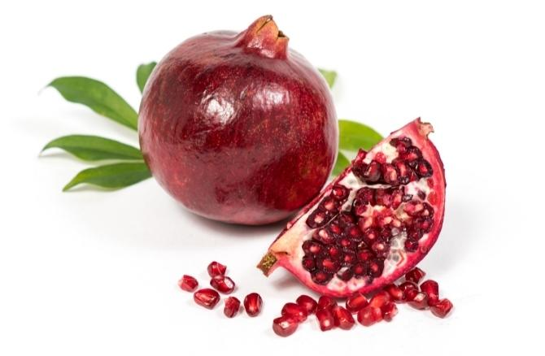

Get to THD

Google is a search engine.
Ich schäme mich nicht Digital Health
Introduction to Digital Health for Global Public Health Master students with a practical focus on web technologies, programming, and data visualisation.
A. Computers, Networking, and the Web
Required Reading: https://ebookcentral.proquest.com/lib/th-deggendorf/detail.action?docID=7275452
1. Digging Deeper - Understanding your machine
Interactive: The Status Quo and Future Outlook of Digital Health around the world
Hands-on: Chapter 1 and 2
Preparing a Simple Website with HTML and CSS
Uploading your Site to Github
More on the Git Protocol: https://twitter.com/alexxubyte/status/1708145139515109449
2. Networking - The web and its infrastructure
Interactive: Servers, Clients, IPs and Protocols of the Internet
Tech Concepts Visualised: https://twitter.com/alexxubyte
URL/URI/URN: https://twitter.com/alexxubyte/status/1695825224019943714/photo/1
Request/Response on the Web: https://twitter.com/alexxubyte/status/1711406474654814575
HTTP Status Codes: https://twitter.com/alexxubyte/status/1712487706859905137/photo/1
HTTPS: https://twitter.com/bytebytego/status/1715973551235510532/photo/1
TCP/IP: https://twitter.com/bagder/status/1716693365234798909/photo/1
Advanced Network Protocols: https://twitter.com/alexxubyte/status/1708863540067696878
Hands-on:
Extending the Webpage Chapter 3-6 - Additional Elements, Lists, Links, Tables, Images
Serving your page using R Shiny
3. Presentation - Cascading Stylesheets (CSS)
Hands-on: Cascading Stylesheets - Chapters 7-10
4. Responsive and Interactive Websites
Hands-on: Chapter 10-11
Tutorial: https://developer.mozilla.org/en-US/docs/Web/CSS/CSS_grid_layout/Realizing_common_layouts_using_grids>/p>
Get to THD

